Create 「Sales Proposal Approval」, reject a proposal, and revise it for approval. Follow the branches chosen by the review result and the loop back to review.
Your installation needs these fixes
The run screens in this chapter were captured on an installation with the following fixes applied (2026-10-30). Installations from before these fixes reach the installation repository may stop partway through a run. This notice will be removed once the fixes are included.
- Installation: process-gpt-infra-docker #1 — missing columns in the task table; without them, the first submission stops.
- Interface: process-gpt-vue3 #234 — makes execution follow the first step and assigned role owners.
- Interface: process-gpt-vue3 #233 — preserves gateway conditions when saving in the editor.
Add a decision to the flow#
The process in Chapter 3 had no branches. This time, ask for approval and rejection from the start. You will create a new process, 「Sales Proposal Approval」.
The customer enters a request, and Minji writes a proposal. Jinyoung reviews it. If he rejects it, Minji revises it and sends it through review again. If he approves it, Minji handles the step for sending it to the customer.
Try it 1 — Create the process through conversation#
- Open a new conversation as in Chapter 3 and choose 「Basic Agent」.
- Enter the prompt below.
- When 「Shall I create the process from this draft?」 appears, choose 「Create the process as is」.
Create a sales proposal approval process. The customer enters their request, then a sales representative writes a proposal and the sales team lead reviews it. If the sales team lead approves, the sales representative sends the proposal to the customer; if the lead rejects it, the sales representative reads the review comments and rewrites the proposal. Put a review result (approve or reject) and review comments in the team lead review form, and make an input form for each step.
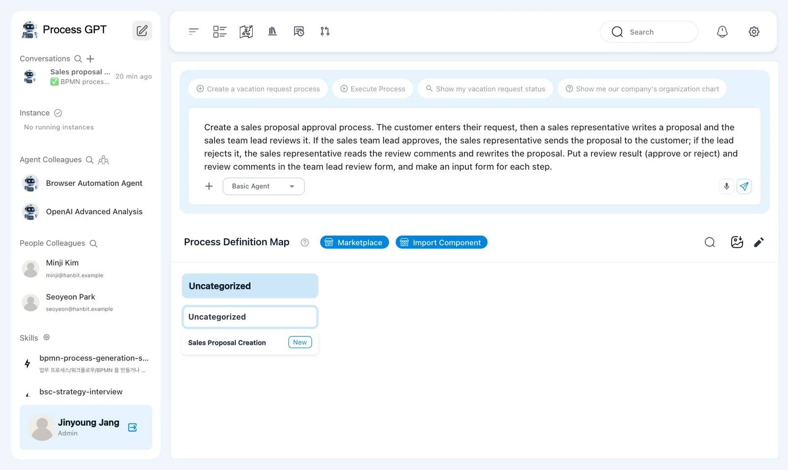
When asking for a branch, say who reviews, where approval leads, and where rejection leads. Also ask for the form field that supplies the decision: 「Review Result」.
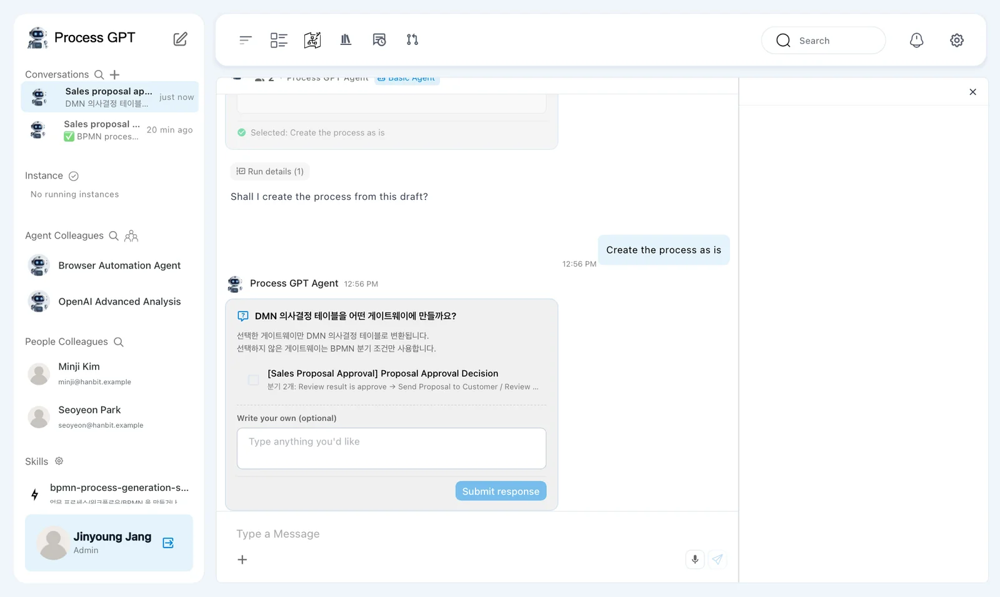
After 「Created a work item to generate the process from the consultation.」, a progress indicator appears. Our run paused at 「waiting_for_user」 and 「72%」 for a confirmation.
Try it 2 — Answer the single confirmation panel#
This English run shows one confirmation panel. It asks whether to create a decision table (DMN) for the gateway. There are no separate skill or agent pages in this run.
The candidate is 「Proposal Approval Decision」 for 「Sales Proposal Approval」. It lists the approval and rejection branches.
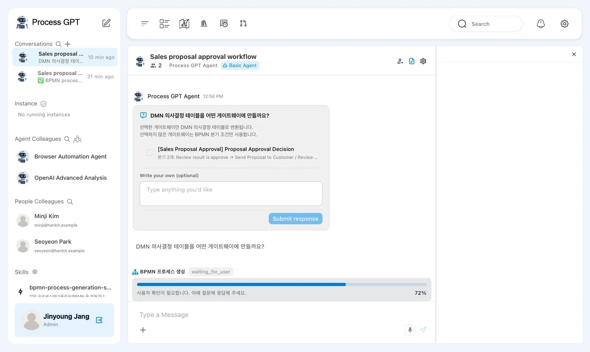
- Leave the gateway candidate unselected. This exercise uses the BPMN branch conditions.
- Find 「Write your own (optional)」. Its placeholder is 「Type anything you'd like」.
- Enter
No decision table is needed — use the BPMN gateway conditions. - Click 「Submit response」 once it becomes enabled.
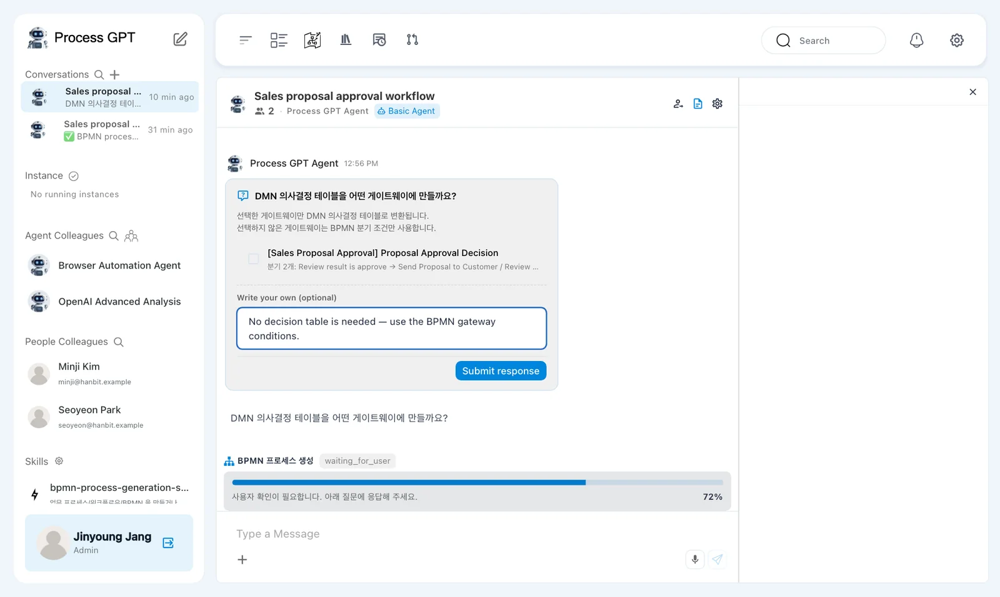
「Submit response」 is disabled while nothing is selected or typed. Entering the response lets you continue without selecting a gateway for DMN conversion.
This confirmation is still in Korean
The current version shows the DMN question and some generation progress text in Korean. 「DMN 의사결정 테이블을 어떤 게이트웨이에 만들까요?」 asks which gateways should become DMN decision tables. The submitted text bubble also starts with 「직접 입력:」, meaning direct input.
About ten seconds after submission, our run showed 「BPMN process generation complete」 and reported that one process had been created and saved.
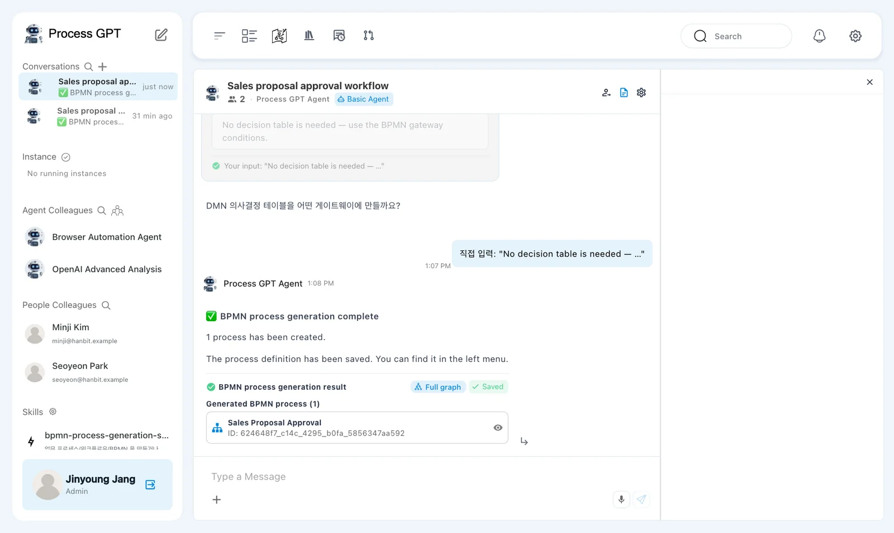
The result card is titled 「BPMN process generation result」 and includes 「Full graph」 and 「Saved」. The definition is saved automatically. There is no separate save button to click here.
Read the gateway and the return arrow#
The generated definition has three lanes: 「Customer」, 「Sales Representative」, and 「Sales Team Lead」.
The flow starts with 「Submit Sales Request」, then moves to 「Write Proposal」 and 「Review Proposal」.
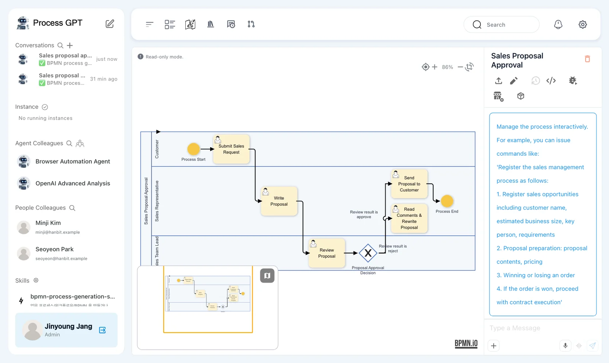
The diamond after review is 「Proposal Approval Decision」. An X inside a diamond means an exclusive gateway. The flow takes one outgoing branch whose condition matches.
| Condition beside the arrow | Next step | What follows |
|---|---|---|
| 「Review result is approve」 | 「Send Proposal to Customer」 | The process ends |
| 「Review result is reject」 | 「Read Comments & Rewrite Proposal」 | The flow returns to 「Review Proposal」 |
The arrow from rewriting back to review makes a loop. Rejection does not end this instance. Minji revises the proposal, and Jinyoung handles the same review step again.
Check the names in your generated process
Generated step, form, and condition names can vary. This chapter uses the names from our run. Check that your approval path reaches customer sending and that your rejection path returns to review after revision.
Try it 3 — Assign the lane owners#
Use the same method as Chapter 5. In this definition's edit mode, the lanes are vertical columns with their names at the top.
- Open 「Sales Proposal Approval」 and click 「Edit」. Double-click the 「Sales Representative」 lane name.
- Choose 「Role Resolution By Direct user」 and select Minji Kim in 「User ID」. Save the panel.
- Double-click 「Sales Team Lead」. Use 「Role Resolution By Direct user」 to select Jinyoung Jang, then save and close the panel.
- Save the definition through 「Version Up」. Our version changes from v0.0 to v0.1.
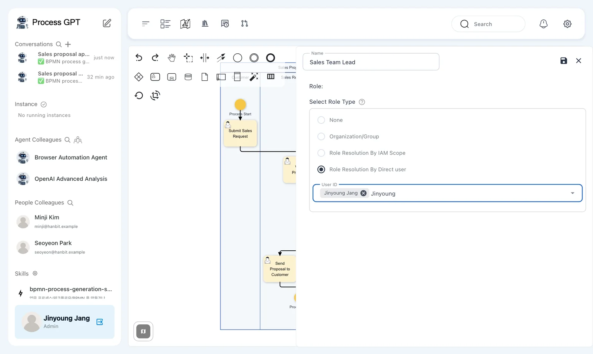
The automatic save after generation and this version save are separate. The version now includes the role owners. Jinyoung will also take the 「Customer」 role when opening the run.
A breadcrumb still shown in Korean
The current version may show 「미분류 › 미분류」 in the definition breadcrumb. These are the uncategorized levels above the process.
Try it 4 — Enter the customer request as Jinyoung#
- As Jinyoung, click 「Execute」 for 「Sales Proposal Approval」.
- Check 「Role Mapping」: 「Customer」 is Jinyoung Jang, 「Sales Representative」 is Minji Kim, and 「Sales Team Lead」 is Jinyoung Jang.
- Enter the request below in 「Sales Request Details」, then click 「Submit Complete」.
Hanbit Trading’s Daejeon branch is moving offices. It needs 30 work desks and 30 chairs, with a budget of KRW 20,000,000, installed before move-in in the first week of December.
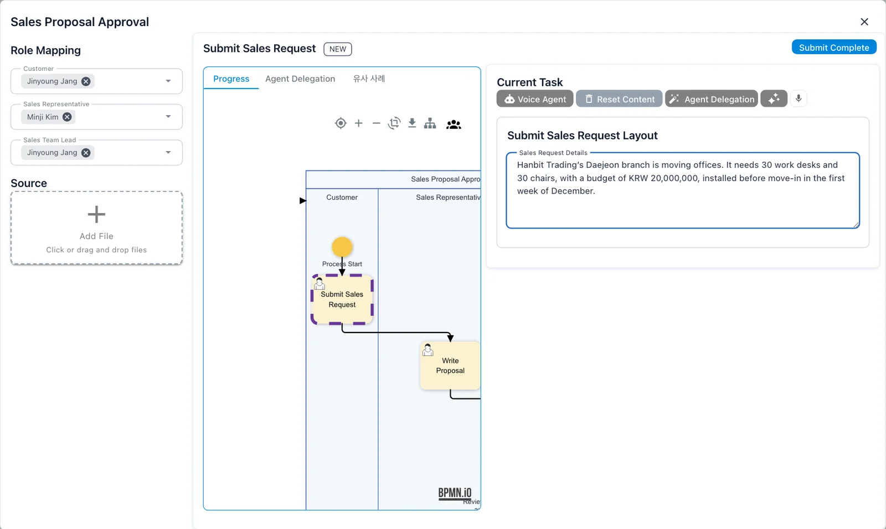
Our instance name appears as 「Sales Proposal Approval · Hanbit Daejeon Office Fu…」. Use this instance name to find the right cards when switching between Jinyoung and Minji.
A task tab still shown in Korean
The current version labels the similar-cases tab 「유사 사례」, even in English mode. Use 「Progress」 to view the process flow.
Try it 5 — Write the proposal as Minji#
In Minji's 「Task List」, open 「Write Proposal」 for this instance. 「Previous Activity Input」 includes 「Submit Sales Request · Jinyoung Jang」.
The current form is 「Write Proposal Layout」. Its 「Proposal Details」 field is a plain text box.
- Read Jinyoung's request in 「Previous Activity Input」.
- Enter the proposal below directly in 「Proposal Details」.
- Check the text, then click 「Submit Complete」.
Daejeon branch move proposal: 30 work desks and 30 mesh chairs. Estimated about KRW 18,000,000 (VAT excluded).
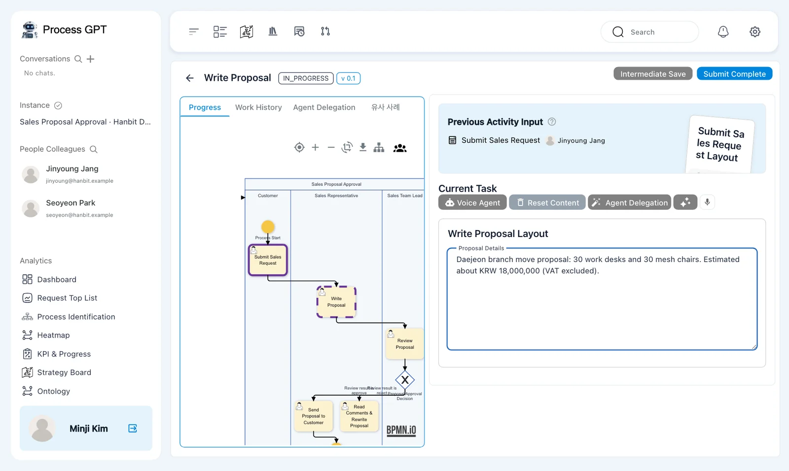
There is no Report editor for this field. Type into the text box itself. In our run, 「Review Proposal」 reached Jinyoung about three seconds after submission.
Try it 6 — Reject the proposal as Jinyoung#
In Jinyoung's 「Task List」, open 「Review Proposal」. 「Previous Activity Input」 contains two entries: 「Submit Sales Request · Jinyoung Jang」 and 「Write Proposal · Minji Kim」.
The current form is 「Review Proposal Layout」.
- Read the request and proposal in 「Previous Activity Input」.
- Change 「Review Result」 from 「Approve」 to 「Reject」.
- Enter the comment below in 「Review Comments」.
- Check that 「Review Result」 is 「Reject」, then click 「Submit Complete」.
The installation fee and schedule are missing. Please add the installation fee for the Daejeon area and an installation schedule before move-in, then rewrite it.
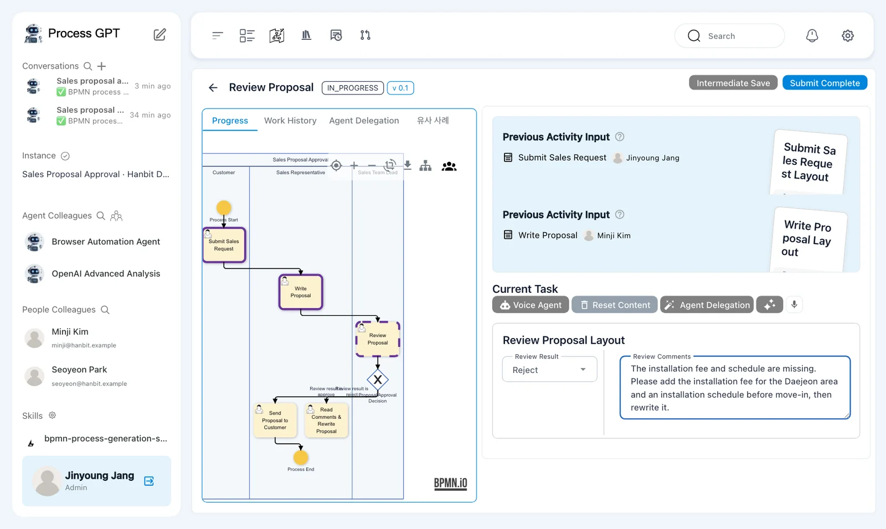
The first review defaults to Approve
Writing a rejection comment does not change the selected result. Change 「Review Result」 to 「Reject」 before submitting.
About eight seconds later, Minji received 「Read Comments & Rewrite Proposal」. 「Send Proposal to Customer」 did not open. The gateway took the rejection branch.
Try it 7 — Revise the proposal as Minji#
Open 「Read Comments & Rewrite Proposal」 as Minji. 「Previous Activity Input」 now includes the request, the first proposal, and Jinyoung's review.
The current form is 「Read Comments & Rewrite Proposal Layout」. It has two Report cards: 「Review Comments」 and 「Revised Proposal」.
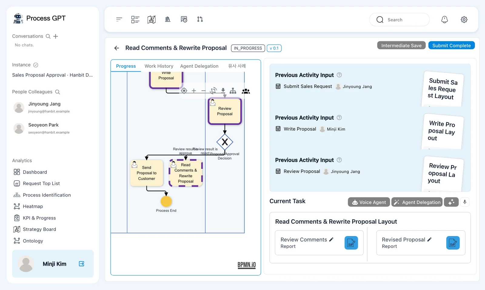
- Read the rejection comment in Jinyoung's 「Review Proposal」 entry under 「Previous Activity Input」.
- Open the 「Revised Proposal」 Report card for editing.
- Enter the revised proposal below in 「Content Editor」, then click 「Save」.
- Check the saved preview and click 「Submit Complete」.
Revised Daejeon branch move proposal: 30 work desks and 30 mesh chairs, products about KRW 18,000,000 (VAT excluded). Includes the Daejeon installation fee; installed over two days in the first week of December, before move-in.
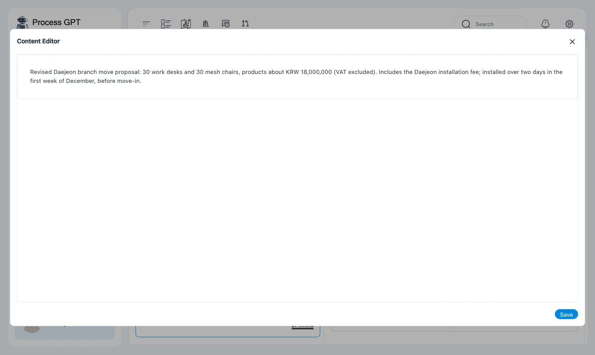
Read the comment in the previous input
The rewrite form's 「Review Comments」 Report card is empty. Jinyoung's comment is not copied into it automatically. Read his review under 「Previous Activity Input」.
About three seconds after submission, 「Review Proposal」 returned to Jinyoung. The flow followed the return arrow to the same review step.
Try it 8 — Approve and record sending to the customer#
Open 「Review Proposal」 again as Jinyoung. This time, the form keeps the previous values. It opens with 「Reject」 and the old comment already filled in.
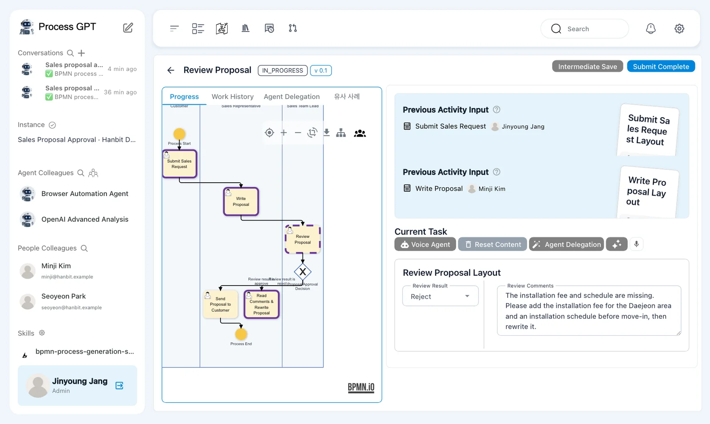
- Read Minji's revised proposal in the previous inputs.
- Change 「Review Result」 from 「Reject」 to 「Approve」.
- Replace 「Review Comments」 with
Good — the installation schedule is included. Please send it to the customer. - Check both values, then click 「Submit Complete」.
- Switch to Minji and open 「Send Proposal to Customer」 when it arrives.
- In 「Send Proposal to Customer Layout」, leave the 「Draft Proposal」 file field empty for this exercise. In the 「Review Result」 text field, enter
Approved — sent the revised proposal with the installation schedule. - Click 「Submit Complete」.
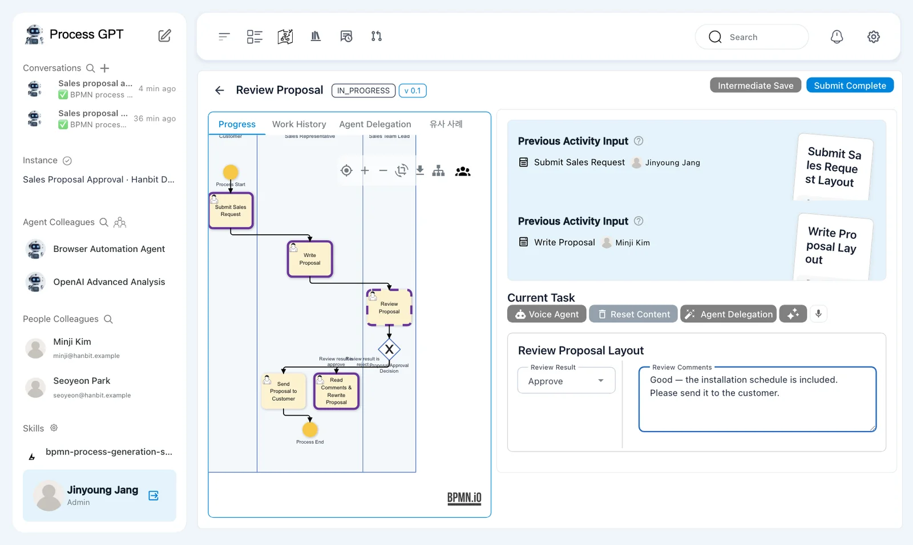
The customer-sending task reached Minji about five seconds after approval in our run. This time, the gateway took the approval branch.
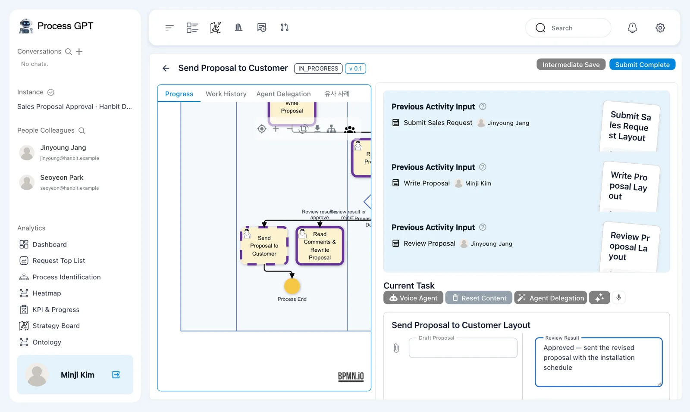
This exercise records the sending step in a form. Submitting the text is not itself an email-sending action.
Check retained values when a step returns
The first review defaulted to 「Approve」, but the reopened review retained 「Reject」. Do not assume a repeated step has reset its form. Check the result and replace the old comment before submitting.
Try it 9 — Check that the instance is complete#
- Check that the instance status is 「COMPLETED」.
- In Jinyoung's window, open 「Kanban Board」 and count the five cards under 「Done」.
- Check that there is only one 「Review Proposal」 card, even though Jinyoung reviewed twice.
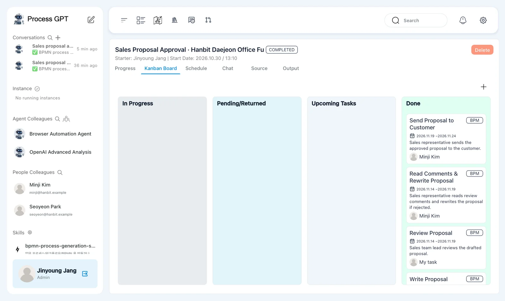
The five cards are:
- 「Send Proposal to Customer」 — Minji Kim
- 「Read Comments & Rewrite Proposal」 — Minji Kim
- 「Review Proposal」 — 「My task」
- 「Write Proposal」 — Minji Kim
- 「Submit Sales Request」 — 「My task」
There is one review card because the same step reopened. A separate second review step was not created. The instance finished after rejection, revision, another review, and the final customer-sending submission.
Next chapter#
You followed a branch based on a review result and a loop that returned work for revision. You have now created and run processes handled by people.
In Chapter 8, you will upload company documents to the Knowledge Base so agents can use them as sources. In Chapter 13, you will run an agent-assisted quote process whose approval path depends on whether the total is below KRW 30,000,000 or at least that amount.
Check your understanding
- Does a diamond with an X send work down every outgoing arrow?
- How does Jinyoung reject the proposal, and where does Minji read his comment?
- What must Jinyoung change when the review reopens?
- Why is there only one completed review card after two reviews?
Answers
- No. An exclusive gateway takes one branch whose condition matches. Here, rejection leads to rewriting and approval leads to customer sending.
- He changes 「Review Result」 from 「Approve」 to 「Reject」 and enters 「Review Comments」. Minji reads his review under 「Previous Activity Input」.
- The reopened form keeps 「Reject」 and the old comment. He must select 「Approve」 and replace the comment before submitting approval.
- The same 「Review Proposal」 step reopened after revision. The process did not create a separate second review step.